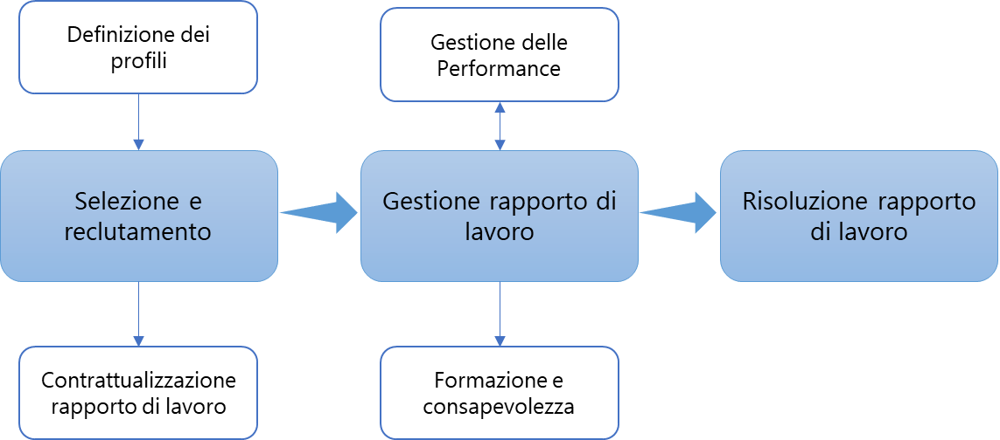

PR05.1 - Gestione del personale
Procedura Gestione delle Risorse Umane |
Revisioni
| Rev. | Data | Descrizione | Redatto | Approvato |
| 0.0 | 24/04/2026 | Prima emissione | HR | Amministratore Unico |
| 0.1 | 09/07/2026 | Revisione assistita da IA: risolto il riferimento di ruolo non definito per le sessioni di sensibilizzazione sulla sicurezza | HR | Amministratore Unico |
Introduzione
Scopo della presente procedura è descrivere le modalità utilizzate da VECTORLAB per la gestione del personale le cui attività hanno rilevanza nella conduzione del Sistema di Gestione integrato (SGI) e nella fornitura dei servizi e prodotti di VECTORLAB, includendo tra questi: dipendenti, collaboratori temporanei, stagisti, assegnisti, tirocinanti.
Riferimenti e Allegati
AMM - PR39.1 - Amministrazione
ALPO01.A - Organigramma
ALPO01.B - Mansionario
ALPR26.1.B - Accordo di Riservatezza con le Terze Parti
ALPO31.B - Atto di Nomina ad Autorizzato del Trattamento
ALPR31.2.A - Informativa Privacy Dipendenti
ALPR31.2.G - Liberatoria Foto-Video Dipendenti
MDPR05.1.A - Checklist Documenti per Inserimento Personale
MDPR05.1.D - Questionario informativo
MDPR05.1.L - Checklist Documenti per Uscita Personale
MDPR05.1.M - Anagrafica Dipendenti
MDPR05.1.Q - Raccolta dati del personale
MDPR05.1.R - Report finale analisi dati del personale
MDPR05.1.S - Consegna chiavi
MDPR05.1.T - Restituzione chiavi
MDPR05.1.U - Gestione chiavi
MDPR05.1.V - Modulo_consegna_riconsegna_HW_utenze
MDPR06.1.B - Scheda personale della formazione
MDPR06.1.C - Piano della formazione annuale
MDPR06.1.D - Modulo partecipanti
MDPR06.1.E - Griglia delle competenze
MDPR08.1.A - Informazioni Documentate
MDPO29.B - Registro dei Trattamenti del Titolare
PO28 - Gestione della Continuità Operativa
PR06.1 - Gestione delle Performance
REG01 - Regolamento sull’utilizzo degli strumenti aziendali
REG02 - Regolamento comportamentale personale
REG03 - Regolamento accesso esterni
Definizioni, Acronimi, Abbreviazioni
HR – Human Resources
RSGI – Responsabile del Sistema Gestione Integrato
SGI – Sistema di Gestione Integrato
SGSI – Sistema di Gestione per la Sicurezza delle Informazioni.
Responsabilità
Le responsabilità relative alle attività previste dalla presente procedura sono le seguenti:
-
Responsabile di Area e HR:
-
definire la competenza necessaria per il personale;
-
individuare, programmare e attuare periodi di formazione e addestramento per il personale;
-
verificare l’efficacia della formazione/addestramento impartito;
-
assicurare la consapevolezza del personale sull’importanza delle proprie attività;
-
definire le esigenze di ricerca del personale in termini di business aziendale
-
stabilire i criteri di selezione e individuazione delle risorse umane per la fase di selezione e reclutamento
-
-
HR:
-
effettuare la ricerca, identificazione e selezione delle risorse umane mediante colloqui attitudinali e tecnici, in affiancamento al Responsabile di Area richiedente;
-
mantenere registrazioni relative alla selezione del personale;
-
mantenere aggiornate le registrazioni relative alle competenze, all’istruzione, all’addestramento, all’abilità e all’esperienza del personale;
-
gestire il personale dal punto di vista amministrativo (cedolino, ferie, malattia, permessi, rapporti normativi con il consulente del lavoro, ecc.);
-
gestire la Salute e Sicurezza dei lavoratori e i contatti con RSPP.
-
Procedura Gestione del Personale
Al fine di ridurre al minimo il rischio per l'Organizzazione derivante da negligenza, che sia accidentale o deliberata, nel ruolo ricoperto, è importante definire e gestire il personale in ogni fase del ciclo di vita lavorativo: dalla selezione e relativa contrattualizzazione del rapporto di lavoro, alla sua gestione, ivi compresi i cambi di mansione, fino alla sua conclusione.
L’intero processo di gestione del personale è in carico alla funzione HR, la quale ha precisi compiti:
-
garantire equità di trattamento a parità di posizione;
-
gestire le performance, la successione e la progettazione organizzativa;
-
offrire sicurezza ai lavoratori in materia di tutela sanitaria e trattamento di fine rapporto;
-
stabilire e comunicare i valori aziendali;
-
amministrare le retribuzioni e i benefit.
Il ruolo strategico della funzione HR riguarda principalmente tre aree di attività: selezione e reclutamento, gestione e risoluzione del rapporto di lavoro a cui afferiscono altrettante attività che completano il ciclo di vita lavorativo del personale, come mostrato nella Figura 1.

Figura - Ciclo di vita lavorativo
Gestione informazioni documentate
Tutte le informazioni relative alla gestione del personale, dalla fase di ingresso in Azienda alla fase di uscita, sono raccolte ed archiviate da HR in XXXXXX nella cartella “RISORSE UMANE\PERSONALE IN FORZA” così organizzato:
\<Num matricola>_Cognome Nome
-
Contratti: documenti che afferiscono alla gestione > contrattuale, ivi compresa la contrattualizzazione dello Smart > Working (il nome dei file deve contenere la data in formato > \<anno>\<mese>\
-
Documenti: documenti identificativi
-
Formazione: attestati della formazione acquisita dal personale
-
Idoneità medico: certificati idoneità rilasciati dal medico > competente
-
Privacy: atti di nomina di ogni tipologia, informative, > liberatoria foto e video, lavoro agile
-
Invalidità: eventuali certificati che attestano l’invalidità > della risorsa
-
L.104: pratica di riconoscimento della Legge 104 per i propri > familiari che HR riceve via PEC
-
TRF: file in formato PDF che attesta la scelta di destinazione > del TRF
-
Una Tantum: dichiarazioni aventi diritto di eventuali bonus > statali
-
Unilav.
La documentazione che HR necessita di condividere con il personale viene salvata anche nel cloud primario all’interno di cartelle create per ogni singolo dipendente nella forma DOCUMENTI DIPENDENTI\\<nn>_Nome Cognome in modo che le comunicazioni tra HR ed ogni dipendente avvengano in un’area personale a cui accedono solo il singolo e HR stessa.
Definizione dei profili per la selezione ed il reclutamento
Il fabbisogno in termini di personale scaturisce a seguito delle attività di sviluppo del business e quindi di esigenze espresse dai Responsabili di Area o dalla Direzione i quali, in collaborazione con HR, provvedono a elaborare le caratteristiche del profilo professionale necessario.
Nello specifico, si procede come segue:
-
Il fabbisogno viene ricondotto il più possibile ad uno dei profili già esistenti nel mansionario “ALPO01.B – Mansionario” oppure descritto dettagliatamente, in caso di nuovo profilo.
-
Ricevuto il profilo da ricercare con i requisiti minimi di selezione, HR si attiva nella selezione consultando prima eventuali CVs presenti negli archivi interni (vedere para 2.1.1), poi attraverso i canali di recruitment o i social media aziendali.
-
Nel corso delle attività di ricerca e selezione, HR ed il Responsabile di Area/Funzione…… o la Direzione mantengono una comunicazione continua per agevolare l’individuazione dei candidati ideali.
-
Una volta selezionati eventuali candidati, sono effettuati i colloqui conoscitivi che avvengono.
-
Durante i colloqui conoscitivi, le informazioni ricevute sono registrate nel verbale “MDPR05.1.D - Questionario informativo” e in XXXXXX. In tale fase, vengono verificate le competenze tecniche dichiarate dal candidato, richiedendo copie dei certificati di studio e professionali che saranno allegati alla restante documentazione, in modo che il maggior numero possibile di informazioni fornite dal candidato possa essere verificato prima dell'eventuale assunzione (es. referenze da occupazioni precedenti, specifici prerequisiti, ecc.).
Tutta la documentazione raccolta durante la fase di colloquio viene salvata su XXXXXX nella cartella:
“VECTORLAB\B_REGISTRAZIONI\HR_Reclutamento\Curriculum Vitae\Anno \<anno di riferimento>”.
Gestione dei curricula
Tutti i Curriculum Vitae (CV) che VECTORLAB riceve da collaboratori interni oppure sull’indirizzo di posta ad essi dedicato (XXX@XXX) vengono archiviati da HR su XXXXXX nella cartella:
“VECTORLAB\B_REGISTRAZIONI\HR_Reclutamento\Curriculum Vitae\Anno \<anno di riferimento>”.
Chiunque, all’interno dell’Organizzazione, riceva un CV deve inoltrarlo alla suddetta casella di posta elettronica e, contestualmente, eliminarlo.
HR ha la responsabilità di:
-
scaricare i CV in XXXXXXX e conservarli per un periodo di 2 anni, come indicato nel Registro dei Trattamenti (“MDPO29.B – Registro dei Trattamenti del Titolare”);
-
cancellare i CV dalla casella di posta;
-
periodicamente, portare all’attenzione dei Responsabili di Area/Funzione..…….. e della Direzione il ricevimento di profili che possano essere attinenti all’area e alle sue necessità.
Contrattualizzazione del rapporto di lavoro
Nell'ambito del Sistema di Gestione per la Sicurezza delle Informazioni (SGSI), è importante che le responsabilità in materia di sicurezza delle informazioni siano comprese da tutti i dipendenti e appaltatori che forniscono servizi a VECTORLAB. Oltre ai programmi di sensibilizzazione continui, queste responsabilità devono essere chiaramente indicate al momento della stipula del contratto di lavoro.
A seguito dell’esito positivo della fase di recruitment, con l’approvazione della Direzione, HR effettua una proposta di collaborazione alla persona selezionata e da avvio alla fase di assunzione, coinvolgendo il consulente del lavoro, il Responsabile IT e il Responsabile dell’Area in cui tale risorsa sarà inserita.
In dettaglio, la fase di assunzione prevede che HR svolga le seguenti attività:
-
Aprire un ticket sul sistema di ticketing aziendale (“MDPR08.1.A – Informazioni Documentate/Tools”) assegnato a IT, con la richiesta di attivazione delle utenze personali e di assegnazione degli asset in conformità con la configurazione standard che la mansione prevede ed eventuali particolarità segnalate dal Responsabile di tale risorsa.
-
Gestire, con il supporto del consulente del lavoro, la predisposizione dei documenti che saranno consegnati al nuovo collaboratore: essi possono essere inviati preventivamente per e-mail alla persona, al fine di fornire una visione preliminare. Rimane comunque valida, come copia ufficiale, solamente quella fornita in forma cartacea il giorno della formalizzazione dell’assunzione (ossia la firma del contratto), che viene archiviata in un armadio chiuso a chiave sotto la responsabilità di HR.
-
Compilare il modulo “MDPR05.1.A - Checklist Documenti per Inserimento Personale” indicando tutti i documenti consegnati al nuovo collaboratore.
-
Prenotare la visita medica aziendale presso il Medico competente e pianificare la formazione obbligatoria, qualora fosse necessario.
-
Condividere con Amministrazione i dati bancari (IBAN) raccolti durante la fase di consegna della documentazione nel modulo “MDPR05.1.M - Anagrafica Dipendenti” **salvato su XXXXXX nella cartella:
“RISORSE UMANE\ANAGRAFICA DIPENDENTI
-
Attivare il Welfare aziendale tramite la registrazione semestrale con lo specifico fornitore.
-
Comunicare a RSGI/XXXXXX l’inserimento della nuova risorsa nell’organigramma “ALPO01.A – Organigramma”.
-
Predisporre la griglia delle competenze “MDPR06.1.E – Griglia delle Competenze” con le informazioni iniziali raccolte durante la fase di colloquio e la documentazione consegnata dalla risorsa per attestare le sue competenze (attestati, titoli, certificati professionali riconosciuti a livello internazionale, ecc.).
La griglia verrà completata e tenuta aggiornata dal Responsabile di Area sulla base di una valutazione annua delle performance, secondo quanto descritto in “PR06.1 – Gestione delle Performance” e riportato al paragrafo 2.5 – Competenze del presente documento.
Questo strumento permette ad HR di predisporre il piano della formazione annuale “MDPR06.1.C - Piano della formazione annuale”.
Tra i documenti che HR consegna al neoassunto ed archivia firmati, vi saranno i seguenti:
-
la nomina del nuovo collaboratore quale “PERSONA AUTORIZZATA AL TRATTAMENTO DEI DATI PERSONALI” sotto l'autorità diretta del Titolare, attraverso il documento “ALPO31.B - Atto di Nomina ad Autorizzato del Trattamento”;
-
l'informativa privacy ALPR31.2.A - Informativa Privacy Dipendenti”;
-
la liberatoria “ALPR31.2.G - Liberatoria Foto-Video Dipendenti”;
-
il modulo “MDPR05.1.V - Modulo_consegna_riconsegna_HW_utenze” debitamente gestito da IT, in collaborazione con HR. La consegna degli asset avviene normalmente il primo giorno lavorativo, HR si fa carico di gestire l’incontro del collaboratore in ingresso con IT.
Collaborazioni in forma di stage e tirocini
Le collaborazioni che non prevedono assunzione diretta, ma l’esecuzione di attività nell’ambito di stage e/o tirocini, seguono lo stesso iter di reclutamento descritto al precedente paragrafo con alcune differenze:
-
la documentazione inviata allo stagista/tirocinante include la firma dell’accordo di riservatezza “ALPR26.1.B - Accordo di Riservatezza con le Terze Parti” con l’Azienda;
-
non vengono assegnati account ed asset aziendali, ma si rimanda all’utilizzo di attrezzature personali per l’espletamento delle attività lavorative assegnate, sotto il controllo di IT;
-
l’accesso alla sede ed alla rete aziendali avviene secondo quanto regolamentato nei documenti “REG01 - Regolamento sull’utilizzo degli strumenti aziendali” e “REG03 - Regolamento Accesso Esterni”;
-
al fine di garantire la compliance al D.lgs. 9 aprile 2008, n. 81, HR organizza una formazione interna per rendere consapevoli tali risorse in materia di Sicurezza sul lavoro.
Destinazione TRF
Il dipendente, in fase di contrattualizzazione, sceglie la destinazione del proprio TRF:
-
in azienda
-
attraverso una forma di previdenza complementare da lui scelta.
Nel caso scelga la destinazione presso l’Azienda, HR lo comunica al consulente del lavoro, il quale invia apposito modulo che HR fa firmare al dipendente e archivia assieme alla restante documentazione.
Nel caso in cui il dipendente scelga una diversa destinazione del TFR, HR lo comunica alla consulente del lavoro. Il dipendente che ha fatto la scelta deve attivare il rapporto con l’istituto bancario o assicurativo che ha scelto e attendere l’apertura della pratica i cui estremi dovranno essere comunicati ad HR via e-mail (XXX@XXX). Quando la procedura viene attivata, HR lo comunica nuovamente al consulente del lavoro, il quale predispone la liquidazione periodica delle cedole. Una volta ricevute tali cedole, HR le inoltra ad Amministrazione che, a sua volta, provvede alla liquidazione.
Gestione del rapporto di lavoro
Una volta inserito nell'organizzazione, HR gestisce gli aspetti amministrativi del personale attraverso una serie di attività di seguito descritte.
Rilevazione presenze mensili e cedolini
XXXXXXXXXX
\<\<Descrivere la modalità di gestione delle presenze e dei cedolini>>
Permessi per visite mediche retribuite
Il dipendente che effettua visite mediche invia via e-mail ad HR il certificato rilasciato dal medico o dalla struttura sanitaria presso cui ha effettuato la visita medica; HR salva tale certificato in XXXXXXX nella cartella:
“RISORSE UMANE\RILEVAMENTO PRESENZE\PRESENZE MENSILI\GIUSTIFICATIVI ASSENZE\Certificati medici\\<Anno>”.
Certificati di invalidità
Il dipendente a cui viene riconosciuta una invalidità invia via e-mail ad HR il certificato rilasciato dall’ASL; HR salva tale certificato in XXXXXXX nella cartella:
“RISORSE UMANE\PERSONALE IN FORZA\\<xx_Cognome Nome>\Invalidità”.
Contestualmente, HR invia lo stesso certificato al consulente del lavoro.
Il personale in questione, avente bisogno di assentarsi per motivi afferenti alla sua invalidità, segna questi permessi come “Permessi visite mediche” il cui monte ore viene gestito dal consulente del lavoro e non conteggiato nel monte ore dei permessi visite mediche retribuite.
Congedo parentale
Il personale gestisce direttamente il congedo con l’INPS e invia via e-mail ad HR la ricevuta PAR che viene salvata in XXXXXXX nella cartella:
“RISORSE UMANE\RILEVAMENTO PRESENZE\PRESENZE MENSILI\GIUSTIFICATIVI ASSENZE\Congedi parentali”.
Il consulente del lavoro viene avvisato sia da HR che da INPS.
Mensilmente, HR verifica l’eventuale presenza di tali permessi e manda al consulente del lavoro, contestualmente alle ore del cedolino, la ricevuta del personale che ne ha usufruito.
La Direzione attua meccanismi di protezione del posto di lavoro e di garanzia del medesimo livello retributivo nel periodo di post-maternità.
Congedo obbligatorio paterno
Il personale chiede tale permesso ad HR in modo ufficiale tramite e-mail che viene stampata in formato PDF e salvata in XXXXXXX nella cartella:
“RISORSE UMANE\RILEVAMENTO PRESENZE\PRESENZE MENSILI\GIUSTIFICATIVI ASSENZE\Congedi obbligatori paterni”.
Mensilmente, HR verifica l’eventuale presenza di tali permessi e manda al consulente del lavoro, contestualmente alle ore del cedolino, la ricevuta del personale che ne ha usufruito.
Permesso per donazione sangue
Il personale che usufruisce del permesso donazione sangue ha diritto, nel giorno della donazione, alla giornata intera di riposo; pertanto, deve provvedere a mandare ad HR il certificato rilasciato dalla struttura presso cui ha donato il sangue. HR salva tale certificato in XXXXXXX nella cartella:
“RISORSE UMANE\RILEVAMENTO PRESENZE\PRESENZE MENSILI\GIUSTIFICATIVI ASSENZE\Donazioni sangue\\<Anno>”.
Permesso elettorale
Il personale che usufruisce del permesso elettorale manda comunicazione via e-mail ad HR che viene stampata in formato PDF; contestualmente allega l’autodichiarazione che attesta il suo ruolo nel processo elettorale. HR salva tutto in XXXXXXX nella cartella:
“RISORSE UMANE\RILEVAMENTO PRESENZE\PRESENZE MENSILI\GIUSTIFICATIVI ASSENZE\Permessi elettorali”.
Permessi Legge 104/92 – Legge 106/25
Il dipendente, che attiva i permessi relativi alla Legge 104/92 per l’assistenza a familiari disabili, si occupa direttamente di gestire la procedura con INPS; HR riceve da INPS comunicazione di attivazione della procedura e successiva conferma di accettazione della domanda. Tale ricevuta viene salvata da HR in XXXXXXX nella cartella:
“RISORSE UMANE\PERSONALE IN FORZA\\<numero matricola_Cognome Nome>\L.104”
Contestualmente, HR salva una copia di tale ricevuta nel cloud primario nella cartella personale del dipendente in “Comunicazioni”.
L’utilizzo di tali permessi viene anche comunicato dal personale ad HR tramite e-mail.
Permesso studio
Il personale che usufruisce del permesso studio manda comunicazione via e-mail ad HR che viene stampata in formato PDF; contestualmente, allega attestato/giustificativo e HR salva tutto in XXXXXXX nella cartella:
“RISORSE UMANE\RILEVAMENTO PRESENZE\PRESENZE MENSILI/GIUSTIFICATIVI ASSENZE\Permessi studio”.
Malattia e infortunio sul lavoro
Sia in caso di riconosciuta mutua che di infortunio, HR, che riceve comunicazione dal personale e relativa documentazione, avvisa tempestivamente il consulente del lavoro.
Gestione trasferte
XXXXXXXXXX
\<\<Descrivere la modalità di gestione delle trasferte>>
Salute e sicurezza sul lavoro
Al fine di garantire la conformità al D.lgs. 9 aprile 2008, n. 81, HR gestisce una serie di attività:
- tiene attivo il monitoraggio delle visite mediche presso il Medico competente, archiviando la documentazione cartacea relativa alle cartelle cliniche personali.
Le cartelle, contenenti dati sensibili dei dipendenti, sono inserite in busta chiusa e sigillata e custodite in cassaforte; esse vengono rese disponibili ai dipendenti in caso di visita medica pianificata; le informazioni vengono gestite nel file “MDPR05.1.M – Anagrafica dipendenti” (foglio “Scadenziario visite mediche”) sempre salvato in XXXXXXXX nella cartella “RISORSE UMANE”;
-
tiene attivo il monitoraggio della validità della formazione obbligatoria e, in caso di necessità, organizza la formazione presso enti accreditati. Le informazioni vengono gestite nel file “MDPR05.1.M – Anagrafica dipendenti” (foglio “Formazione obbligatoria”);
-
gestisce le relazioni con RSPP e tutte le segnalazioni in ambito sicurezza dei lavoratori che possono emergere dalle verifiche del RSPP stesso, da audit di prima o seconda o terza parte, da RLS o dai lavoratori stessi. Tali segnalazioni sono registrate nel sistema di ticketing aziendale (cfr. “MDPR08.1.A – Informazioni Documentate/Tools”) attraverso l’apertura di un ticket che verrà condiviso con l’Area che deve collaborare (IT, Amministrazione, ecc.);
-
raccoglie le registrazioni e la documentazione a supporto (segnalazioni, verbali, DVR, ecc.) nella cartella su XXXXXXX nella cartella:
“VECTORLAB\B_REGISTRAZIONI\HR_Sicurezza fisica ambientale”.
Welfare
XXXXXXXXXX
\<\<Descrivere la modalità di gestione del Welfare aziendale, se previsto, con l’utilizzo di ALPR05.1.H – Piano Welfare >>.
Cambio mansione o ruolo
In caso di cambiamento di mansione o ruolo, la Direzione comunica formalmente via e-mail il cambiamento ad HR che si attiva per gestire le seguenti attività:
-
apertura di un ticket sul sistema di ticketing aziendale secondo quanto descritto in “IOPR05.1.B - Utilizzo sistema di ticketing XXX” per la registrazione del cambiamento, in modo che esso possa essere correttamente preso in carico da IT per la gestione degli accessi logici che potrebbero dover essere rivisti;
-
comunicazione a RSGI/XXXXXXX per l’aggiornamento dell’organigramma “ALPO01.A – Organigramma” con l’indicazione del cambiamento di mansione/ruolo della risorsa.
Competenze
VECTORLAB definisce le competenze necessarie per tutto il personale incaricato delle attività e dei compiti che influenzano la qualità dei servizi offerti dall'Azienda, la sicurezza delle informazioni e la gestione corretta dei dati personali.
Le competenze possono riguardare: istruzione, ossia titoli di studio, formazione, addestramento, esperienza e abilità personali (leadership, propensione al team building, ecc.) e sono inizialmente raccolte da HR, con il supporto della Direzione e/o dei Responsabili di Area in fase di assunzione (come riportato al paragrafo 2.3 - Contrattualizzazione del rapporto di lavoro) e comunque entro 6 mesi dall’ingresso della risorsa in Azienda, nella griglia delle competenze “MDPR06.1.E – Griglia delle Competenze”.
Tale griglia deve essere costantemente tenuta aggiornata e seguire l’andamento delle valutazioni successive delle competenze del personale, in accordo con quanto descritto in “PR06.1 - Gestione delle Performance”.
La valutazione annuale delle competenze si basa sulla valutazione delle competenze generali assunte dalla risorsa, in accordo ad un modello di comportamenti che creano valore per l’Azienda ed eventuali obiettivi personali che ogni Responsabili di Area può concordare con la singola risorsa afferente.
In sintesi, le attività da eseguire per il mantenimento e miglioramento delle competenze del personale sono:
-
formazione attraverso la partecipazione a corsi o webinar che HR può pianificare nel “MDPR06.1.C - Piano della formazione”;
-
affiancamento da parte di personale esperto o di consulenti (training on the job);
-
rotazione del personale in modo che segua diverse attività;
-
assunzione di personale già competente o valutazione di collaborazioni esterne;
-
eventuale assegnazione di obiettivi concreti che verranno monitorati secondo quanto descritto in “PR06.1 - Gestione delle Performance”;
-
iniziative personali, abbonamenti a newsletter o iscrizioni a forum, come forme di autoformazione individuale.
Ad inizio di ogni anno, HR prende in carico il processo e, attraverso attività di sensibilizzazione, sollecita i Responsabili di Area a portare a termine la valutazione delle competenze in modo da aggiornare la relativa griglia delle competenze.
Entro la fine del mese di gennaio, HR verifica che le evidenze a supporto delle competenze siano state correttamente raccolte.
Tutte le evidenze relative alle competenze sono salvate su XXXXXX nella cartella:
“VECTORLAB\B_REGISTRAZIONI\HR_Competenze\\<anno di riferimento>”.
Formazione
HR predispone un piano di formazione annuale " MDPR06.1.C - Piano della formazione", che tiene conto delle esigenze aziendali, delle competenze necessarie da acquisire, della formazione obbligatoria e della formazione afferente al Sistema di Gestione Integrato al fine di aumentare la consapevolezza e la conoscenza delle politiche e procedure e quindi il loro rispetto.
Il piano della formazione deve essere tenuto aggiornato e può subire variazioni in quanto non è possibile prevedere a inizio anno tutte le esigenze formative.
Il piano viene gestito in due fasi: pianificazione e consuntivazione.
Pianificazione
In questa sezione HR predispone, con il supporto del Responsabili di Area o la Direzione richiedente, i contenuti del piano nei primi mesi dell’anno riportando una serie di informazioni di seguito descritte:
-
codice;
-
formazione da effettuare: breve descrizione e/o titolo della formazione;
-
obiettivi della formazione: indica quali obiettivi tale formazione intende raggiungere;
-
rilascio certificazione: indica se la formazione rilascia una certificazione ufficiale;
-
a cura di: indica chi erogherà la formazione (ente/persona fisica/fornitore/piattaforma ecc.);
-
partecipanti: elenco nominale dei partecipanti per i quali è pianificata la formazione;
-
modalità di svolgimento:
-
affiancamento (training on the job);
-
aula frontale;
-
on-line;
-
studio personale;
-
webinar;
-
-
periodo previsto: indica il periodo in cui verrà erogata la formazione;
-
durata: espressa in termini di ore;
-
verifica dell’efficacia formativa:
-
data pianificazione: è la data in cui è previsto verificare l’efficacia della formazione; per alcune tipologie di formazione l’efficacia può essere misurata a distanza di tempo dall’erogazione;
-
metodologia: indica la metodologia con cui si intende verificare l’efficacia già in fase di pianificazione in modo da condividerlo con le risorse interessate al processo:
-
Autovalutazione – il personale che ha effettuato l’attività formativa a distanza di tempo può rilasciare un’autocertificazione relativamente al raggiungimento o meno degli obiettivi prefissati;
-
Esame certificazione;
-
Test;
-
Valutazione Terza parte – analogamente all’autovalutazione, una terza parte tra cui personale dell’organizzazione, responsabili dell’area o la direzione possono rilasciare una certificazione di raggiungimento o meno degli obiettivi prefissati.
-
-
Consuntivazione
In questa sezione, HR inserisce le informazioni ad erogazione della formazione avvenuta, riportando:
-
la data di effettivo svolgimento o motivo della non erogazione: indica la data in cui la formazione è stata effettivamente erogata o il motivo per cui la pianificazione della stessa non è andata a buon fine o la motivazione di eventuale ritardo rispetto alla pianificazione;
-
la verifica dell’efficacia: indica il generale andamento della verifica e riporta eventuali azioni intraprese per le verifiche che hanno dato esito negativo.
Al fine di dare evidenza dell’erogazione della formazione, HR mantiene le seguenti registrazioni:
-
piano della formazione annuale “MDPR06.1.C - Piano della formazione";
-
modulo in cui è registrata la partecipazione ad una eventuale formazione interna "MDPR06.1.D - Modulo partecipanti", per le formazioni in aula oppure on-line (o analoga evidenza per le formazioni esterne);
-
attestati di partecipazione e certificati, ove previsto;
-
verifica dell’efficacia (certificati, risultati test, autocertificazioni, valutazioni terze parti).
Tali evidenze sono salvate su XXXXXX nella cartella:
“VECTORLAB\B_REGISTRAZIONI\HR_Formazione\\<anno>”.
Al fine mantenere lo stato delle competenze aggiornato assieme alle registrazioni dell’avvenuta formazione, HR conserva e monitora:
-
le schede della formazione che ciascuna risorsa mensilmente aggiorna “MDPR06.1.B - Scheda personale della formazione”;
-
certificazioni e/o attestai a supporto delle competenze tecniche che ciascuna risorsa mensilmente si fa carico di salvare nella cartella personale condivisa con HR;
-
curriculum vitae in formato europeo che ciascuna risorsa si impegna a tenere aggiornato nella cartella personale condivisa con HR.
Consapevolezza
Le attività di sensibilizzazione e consapevolezza hanno l'obiettivo di rendere consapevole il personale delle proprie responsabilità, dell’importanza del loro contributo per la sicurezza delle informazioni e protezione dei dati personali, dei suoi benefici e delle conseguenze del mancato rispetto delle regole stabilite e del cogente di riferimento.
Per rafforzare la consapevolezza in termini di informazioni documentate, il personale viene sottoposto a questionari relativi ai contenuti delle informazioni documentate di sistema e vengono effettuati brevi incontri sul tema della sicurezza delle persone e delle informazioni e protezione dei dati personali, e-mail periodiche e condivisione di video presi da fonti ufficiali[1].
Periodicamente, il CISO effettua brevi sessioni di formazione per ricordare a tutti come reagire a tentativi di social engineering o a fronte di particolari emergenze.
Queste sessioni possono essere abbinate a test pratici di continuità operativa, come riportato in “PO28 - Gestione della Continuità Operativa”.
Chiavi
Su input e decisione della Direzione, HR gestisce l’assegnazione e restituzione delle chiavi di accesso ai locali aziendali attraverso i moduli “MDPR05.1.S – Consegna chiavi” e “MDPR05.1.T – Restituzione chiavi”.
Tali moduli firmati dal personale vengono salvati nel cloud secondario nella cartella:
“RISORSE UMANE\CHIAVI”.
Contestualmente, HR aggiorna il documento che riporta la situazione delle chiavi attraverso il modulo “MDPR05.1.U – Gestione chiavi”.
Il processo si conclude con l’apertura, da parte di HR, di un ticket di “Richiesta di cambiamento” sul sistema di ticketing verso IT, al fine di aggiornare il modulo “MDPR05.1.V - Modulo_consegna_riconsegna_HW_utenze” della risorsa in questione.
Risoluzione del rapporto di lavoro
All’atto della risoluzione del rapporto di lavoro, qualunque sia la sua natura, devono essere compiute tutte le attività al fine di gestire sia la chiusura del rapporto del lavoro sia garantire la sicurezza delle informazioni.
Per organizzare al meglio l’eventuale transizione e assicurare che la conoscenza non vada persa e garantire la continuità, è previsto un periodo di transizione. Tale periodo può variare a seconda del lavoro, delle responsabilità e del know-how del dipendente che lascia la società o cambia le sue responsabilità. Il modo migliore per raggiungere questo obiettivo è di solito avere un periodo di affiancamento con il dipendente uscente e preparare un elenco di attività e conoscenze da condividere e addestrare, assicurandosi che tutte le informazioni siano lasciate condivise.
A transizione completata, a seguito della comunicazione da parte della Direzione della risoluzione di un rapporto di lavoro, HR si fa carico delle seguenti attività:
-
richiesta di disattivazione delle utenze personali e ritiro asset assegnati attraverso l’apertura di un ticket identificato come “Change Management” sul sistema di ticketing assegnato a IT, che provvederà alla chiusura delle utenze e recupero degli asset;
-
comunicazione via e-mail al consulente del lavoro per la predisposizione di tutti i documenti di cessazione del rapporto di lavoro e relativa assistenza sanitaria;
-
compilazione del modulo “MDPR05.1.L - Checklist Documenti per Uscita Personale” indicando tutti i documenti consegnati alla risorsa uscente.
In fase di chiusura è importante ricordare che la sicurezza delle informazioni e le responsabilità legali rimangono valide anche dopo la risoluzione del contratto di lavoro, come esplicitamente sottoscritto in esso e nel modulo “MDPR05.1.V - Modulo_consegna_riconsegna_HW_utenze”.
Comunicazioni
Tulle le comunicazioni aziendali sopra descritte vengono salvate da HR su XXXXXX nella cartella:
“VECTORLAB\Pubblicato\E_COMUNICAZIONI\\<anno di riferimento>”.
Raccolta evidenze
Di seguito una tabella riassuntiva delle evidenze che HR deve mantenere o coordinare ed il relativo repository in cui vengono salvate.
| PROCESSO | EVIDENZA | REPOSITORY | CARTELLA | FILE |
| Competenze | Griglia delle competenze | XXXXXX | VECTORLAB\B_REGISTRAZIONI\HR_Competenze | |
| Formazione | Piano della formazione, foglio presenze, efficacia della formazione |
XXXXXX | VECTORLAB\B_REGISTRAZIONI\HR_Formazione | |
| Formazione | CV aggiornati, certificati, attestati, scheda della formazione |
XXXXXX | XX_Nome Cognome\Formazione |
|
Gestione contrattuale |
Nomina Autorizzato al trattamento dati personali | XXXXXX |
|
ALPO31.B - Atto di Nomina ad Autorizzato del Trattamento_<cognome>_signed.pdf |
| Gestione contrattuale | Contratto, Modulo contenente le informazioni sulla destinazione del TFR, Informativa sul trattamento dei dati personali e clausola di consenso per i dipendenti e/o collaboratori, Accordo di riservatezza, Liberatoria per foto e video, Assegnazione asset |
XXXXXX | Risorse umane\Personale in forza | |
| Gestione contrattuale | IBAN | XXXXXX | Risorse umane\Anagrafica dipendenti | MDPR05.1.M - Anagrafica dipendenti |
| Gestione Salute e sicurezza lavoratori | Attività di formazione obbligatoria, scadenze delle visite mediche e anagrafica dei dipendenti attuali e passati | XXXXXX | Risorse umane\Anagrafica dipendenti | MDPR05.1.M - Anagrafica dipendenti |
| Reclutamento | Curriculum Vitae candidati | XXXXXX | VECTORLAB\B_REGISTRAZIONI\HR_Reclutamento\Curriculum Vitae\<anno di riferimento> | aaammgg_CV_Cognome_Nome.pdf |
| Reclutamento | Questionario informativo, informazioni raccolte durante colloquio | XXXXXX | VECTORLAB\B_REGISTRAZIONI\HR_Reclutamento | |
| Regolamenti | Regolamento Fondo Assicurativo, Welfare |
XXXXXX | VECTORLAB - Pubblicato\C_DOCUMENTI ORIGINE ESTERNA\Regolamenti | |
| Salute e sicurezza sul lavoro | Formazioni effettuate e monitoraggio | XXXXXX | Risorse umane\Anagrafica dipendenti | MDPR05.1.M - Anagrafica dipendenti |
| Salute e sicurezza sul lavoro | Segnalazioni, verbali | XXXXXX | VECTORLAB\B_REGISTRAZIONI\HR_Sicurezza fisica ambientale | |
| Welfare | Welfare | XXXXXX | Risorse umane\nome ente\Welfare | ALPR05.1.H – Piano Welfare |
- Materiale _e disponibile sul sito ENISA: www.enisa.europa.eu/media/multimedia/material.